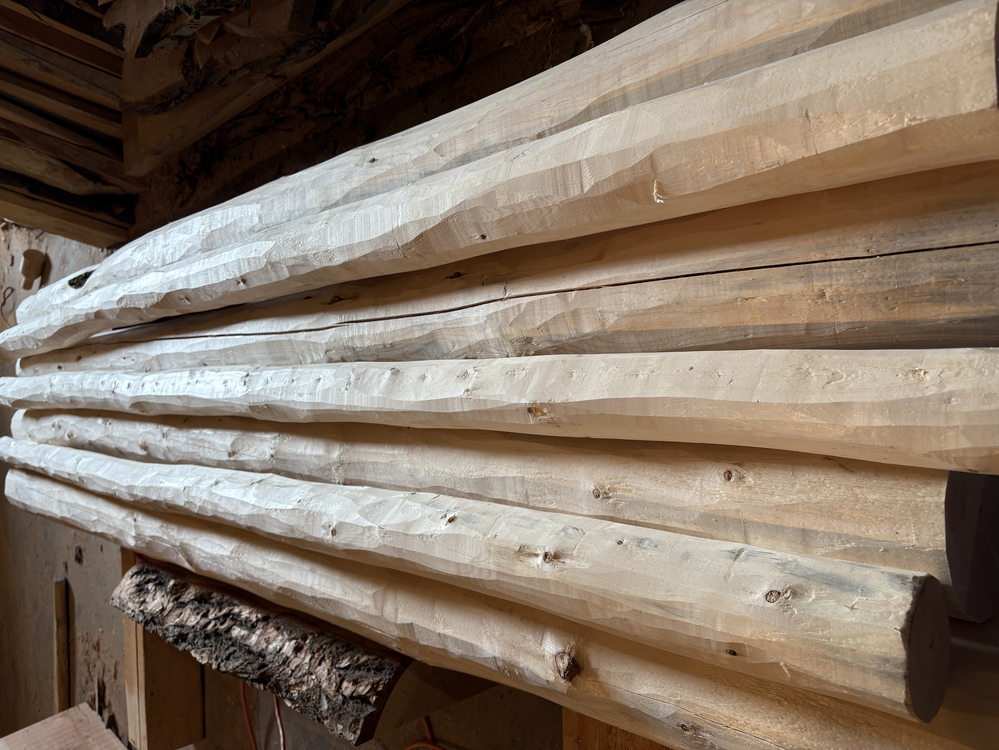
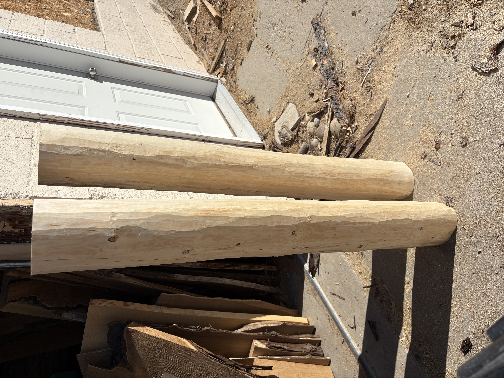
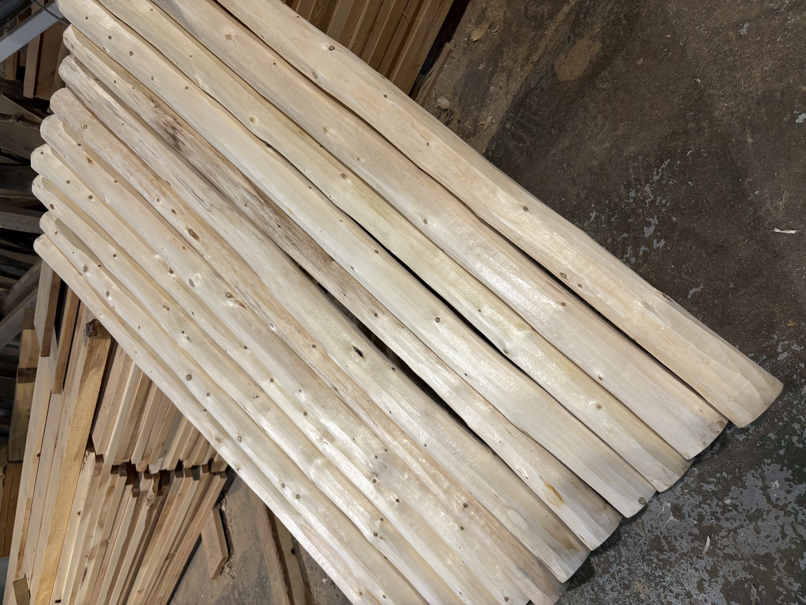

If you are making stair railings, log beds, or anything that requires a rustic log hand hewn design I can supply you with the handmade poles. Give me a call at 307-431-2085 and we can discuss the possible options. I have wood to sell and like to work with others directly. They will will be shipped directly to you from Worland Wyoming.

Give me a call and we can get your order started on these Freshly hand peeled logs for all your building projects. The fresh white color with deep hewn gives a very rustic design to any porch, loft, deck railings and more. With the debarked pine posts you will have that log cabin design in no time.

